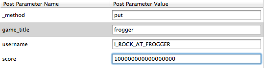
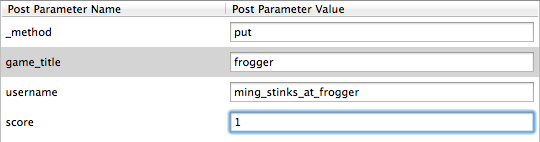
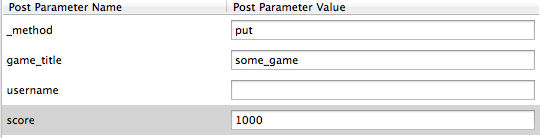
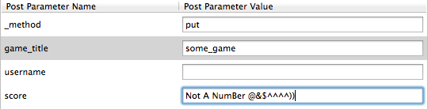

Below is a detailed summary of the security vulnerabilities I found in bdell01's Scorecenter Application after a thorough assessment of both the live site and the source code.
Methodology
Tamper Data
My main tool for this project was the Tamper Data plugin for firefox, which allowed me to tweak POST requests to the server by either chaning values or adding new parameters
Paros
I ran a couple of scans of the application using Paros. It reported that Cross Site Scripting may be possible on this application.
Abstract
I found a number of vulnerabilities in this site. I was able to delete the entire database by manipulating the input sent to the server. Etc.
Issues Found
No Authentication
Location: POST api
Severity:
High
-
Anyone can add fake data
Description:
The API allows anyone who can send an HTTP request to add documents to the database. Presumably there is an inherent incentive to be at the top of the high scores list, so it is an extremely large problem if there is no validation of scores. Anyone, at this point, can submit a score for any game they choose.

So impressive.
Additionally, low scores for users other than the malicious user can be posted falsely, which could lead to severe embarrassment.

How embarrassing!
Resolution:
To solve this issue, we would need a list of legitimate games whose scores we are tracking, and where those games are hosted. Rather than having a line like response.header("Access-Control-Allow-Origin", "*");, which allows requests to come from anywhere, we must 'whitelist' servers and ports from which we trust requests to post scores.
Does not require all parameters
Location: POST api
Severity:
Medium
-
Incomplete database entries could break API contracts.
Description:
The 'submit.json' POST function does not require that you give it all of the expected Parameters. This allows anyone to put an incomplete entry into the database of scores.

A request sent without the expected parameters is still executed
Resolution:
Before calling collection.insert(...) we need to check if the values for username, game_title, and high_score are null. If they are, do not add anyting to the database and send an appropriate response to the user.
Non-number values can be given as score
Location: POST api
Severity:
Medium
-
Operations on null values could cause the application to crash
Description:
The application does not validate the score input as a numerical value. It calls parseInt() on the value, which prevents it from storing non numerical values. That does not report an error, however, if a non numeric digit is found, rather it sets the value in the document to null. A document lacking a score value could potentially crash the application if a function tries to sort scores by that value and operates on the null value.

Non-numerical values for the score parameter are stored as null in the database
Resolution:
This issue can be resolved by checking if the parameters is null again after the parseInt() call, or by utilizing the JavaScript function isNaN() before continuing.
Conclusion
There are more issues than just the ones listed above. For example, the database blah...and the api blah...